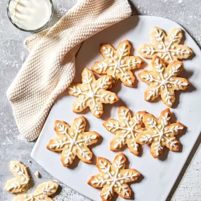

Back To Home
Nick's Snowflake Biscuits

Description:
These biscuits can be cut into any shape you like using different cutters. A wonderful cookie to make at
Christmas or try stars or love hearts instead for other occasions.
15 min prep plus resting time. 10 min cook
time. makes 16-18 biscuits.
Ingredients:
- 125g Western Star Unsalted butter, softened
- 110g caster sugar
- 1 egg
- 2 tsp vanilla extract
- 225g plain flour, sifted
- White icing pen (available from supermarkets)
Method:
- Preheat oven to 160°C and line two large baking trays with baking paper
- Place the butter and sugar into the bowl of an electric mixer and mix on medium speed for 5 minutes or until
pale and creamy.
Add the egg and vanilla and beat until well combined. Add the flour and mix on low
speed until mixture just comes together and forms a dough.
Cover dough in plastic wrap and refrigerate
for 15 minutes
- Roll the dough between two sheets of baking paper until 3mm thick. Place onto a tray and refrigerate for a
further 15 minutes
- Remove from the fridge and using a snowflake shape cookie cutter, cut cookies from dough. Carefully transfer
to prepared tray and place into the oven for 10 minutes or until just turning golden.
Remove from the
oven and allow to cool completely on trays. Decorate snowflakes using white icing pen. Allow icing to set
before serving
Tips & Hints:
- These biscuits can be cut into any shape you like using different cutters. Try stars or love hearts instead!